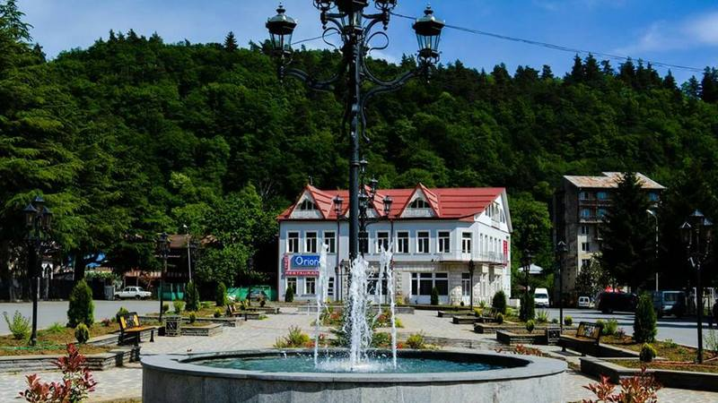
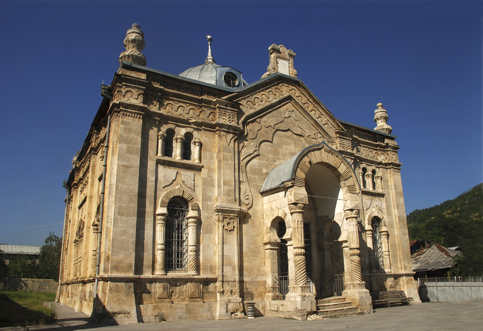

მზის ქალაქი ონი 
მზის ქალაქის ისტორია
ონი როგორც ტურისტული ადგილი
ონის ღირსშესანიშნაობები
ონის და ებრაული მხარის კავშირი
მზის ქალაქი ონი გამორჩეულია მრავალი ღისშესანიშნავი ადგილებით, მზის ქალაქიც ებრაულიდან მომდინარეობს ონის მოსახლეობა ყოველთვის სიამაყით მოიხსენიებს ებრაელ ხალხს.
ონის სინაგოგა
